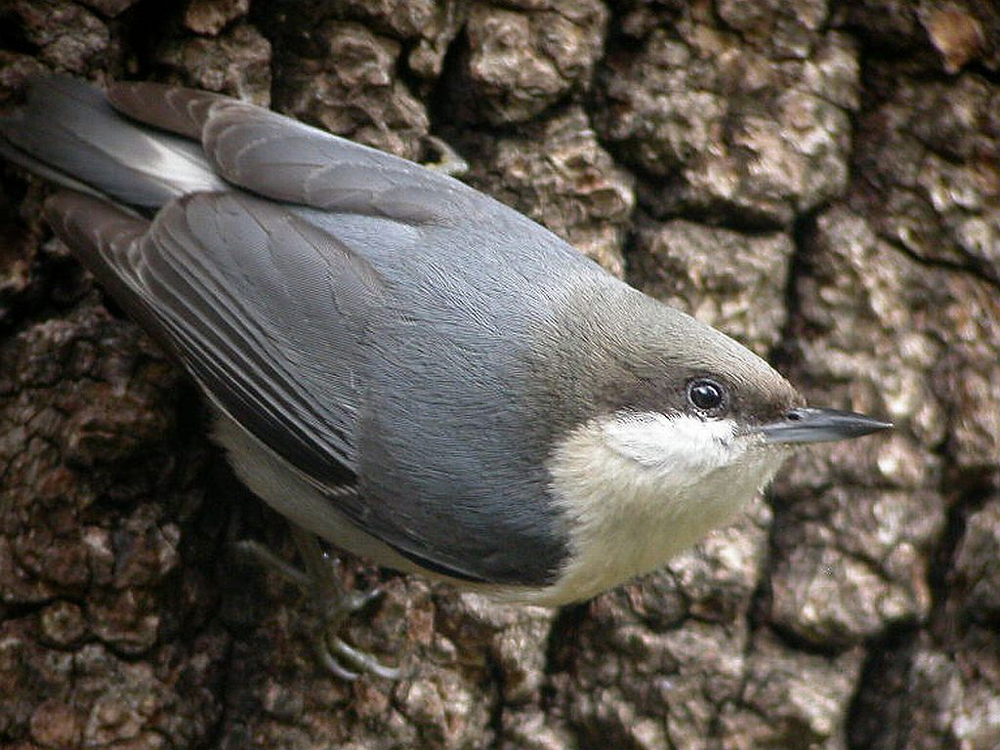

Sıvacı kuşu (Sitta europaea), küçük yapısı, mavi-gri sırtı ve pas rengi göğsüyle tanınan, ağaç gövdelerinde baş aşağı dolaşabilen çevik bir türdür. Ortalama 12–14 cm uzunluğa sahip olan bu kuş, böcekler, tohumlar ve küçük omurgasızlarla beslenir. En dikkat çekici özelliği, yuva girişlerini çamurla daraltarak güvenli hâle getirmesidir; bu davranışından dolayı “sıvacı” adı verilmiştir. Ormanlık alanlarda, özellikle meşe ve çam ağaçlarında yaşayan sıvacı kuşu, güçlü gagasıyla kabuk altındaki böcekleri çıkarabilir. Doğru koşullar altında 8–10 yıl yaşayabilen bu tür, hem çevik hareketleri hem de özgün yuva yapma alışkanlığıyla kuş dünyasında özel bir yere sahiptir.